SEVENTEEN (세븐틴) is a 13-member South Korean self-producing boy group under Pledis Entertainment, a subsidiary of HYBE Labels. The group consists of S.Coups, Jeonghan, Joshua, Jun, Hoshi, Wonwoo, Woozi, DK, Mingyu, The8, Seungkwan, Vernon, and Dino. They debuted on May 26, 2015, with their first mini album, 17 CARAT.
| 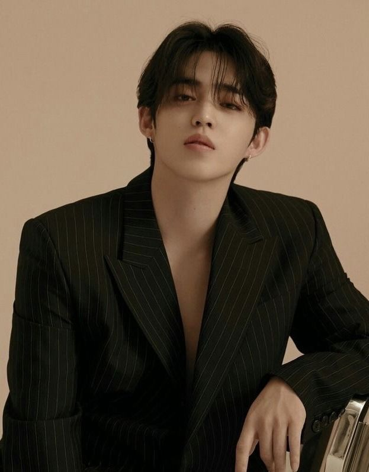 |
Position: Leader, Hip-Hop Team Leader, Rapper, Sub-Vocalist Birthdate: August 8, 1995 – He was born in Daegu, South Korea. – He has a brother who is two years older than him. – His stage name is derived from “Seungcheol” and “Coup d’état” (“great success”) . – He became a trainee in 2010 and trained for 6 years. |
| 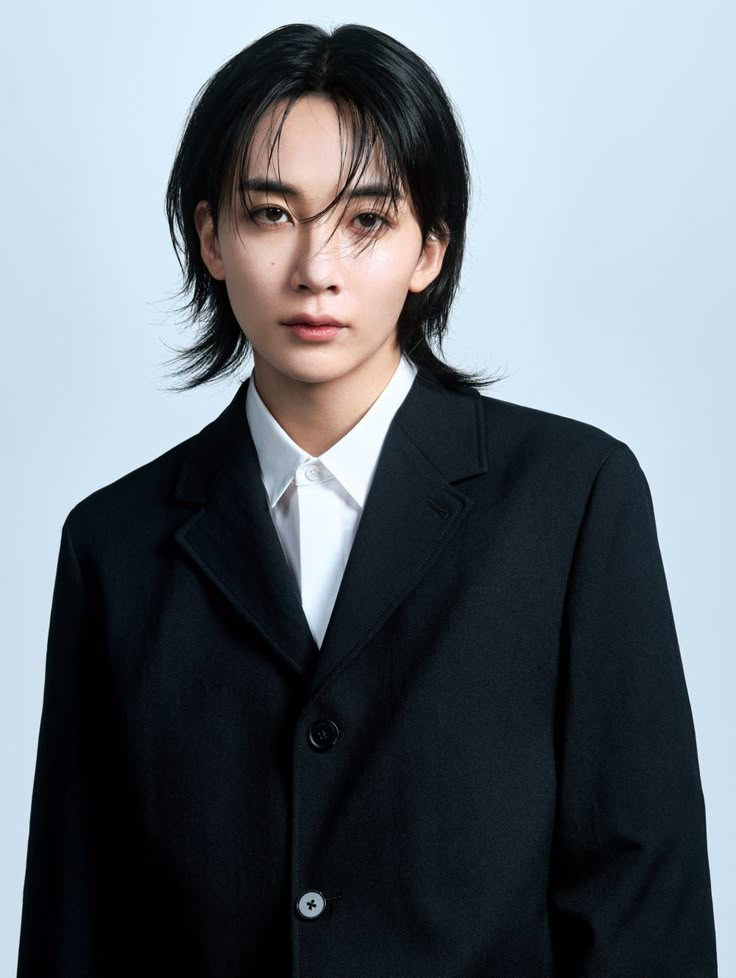 |
Position: Lead Vocalist, Visual Birthdate: October 4, 1995 – He was born in Hwaseong, South Korea. – He ranks himself the third best visual in the group, after Vernon and Mingyu. – He became a trainee in 2013. |
| 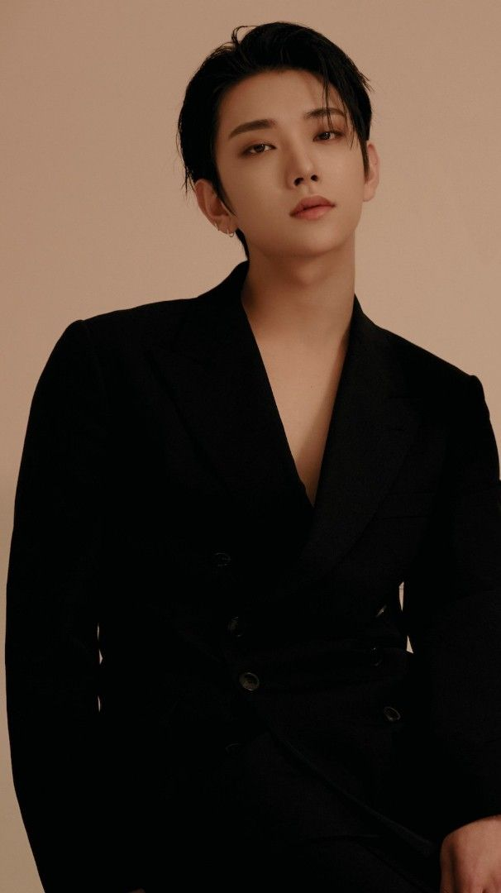 |
Position: Lead Vocalist, Visual Birthdate: December 30, 1995 – He was born in Los Angeles, California, United States. – He is ethnically fully Korean but was born and raised in America. – He is an only child. – He joined Pledis Entertainment and began his training in 2013. |
| 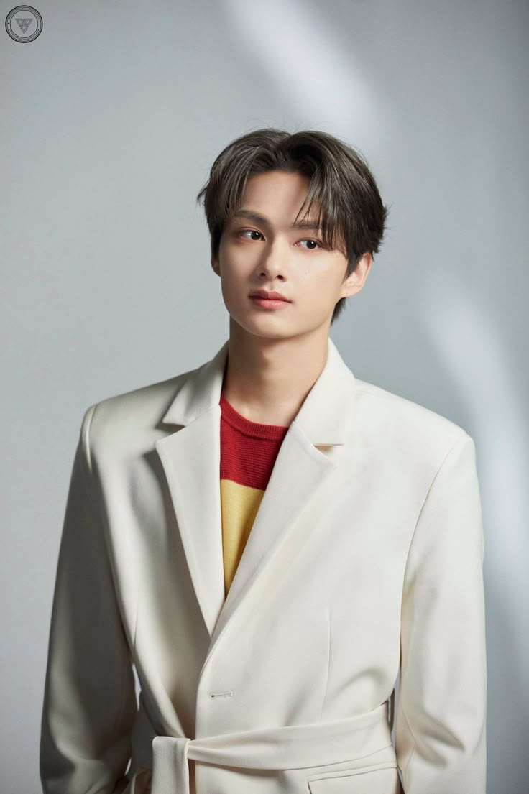 |
Position: Lead Dancer, Sub-Vocalist Birthdate: June 10, 1996 He was born in Shenzhen, Guangdong, China. – He was a child actor in China. – He can speak Mandarin, Cantonese, and Korean. – He became a trainee in 2012. |
| 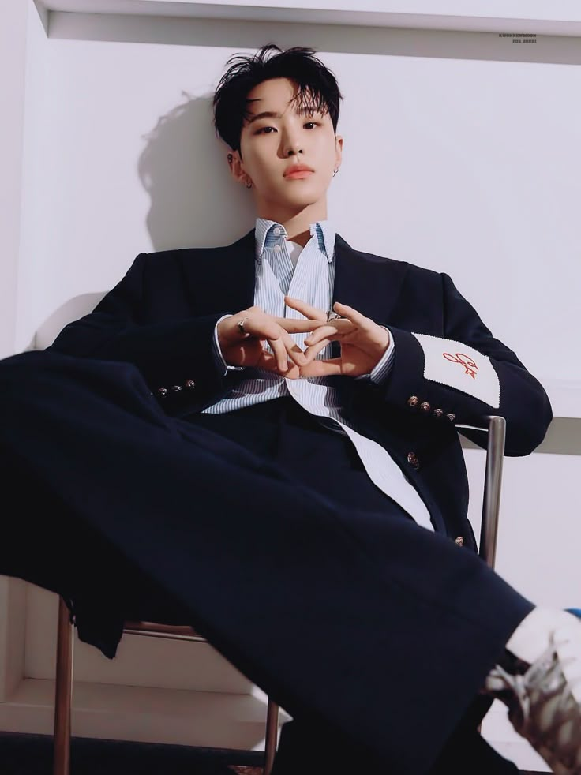 |
Position: Performance Team Leader, Main Dancer, Lead Vocalist, Sub-Rapper Birthdate: June 15, 1996 – He was born in Namyangju-si, Gyeonggi-do, South Korea. – He choreographs most of SEVENTEEN’s songs. – He became a trainee in 2011 |
| 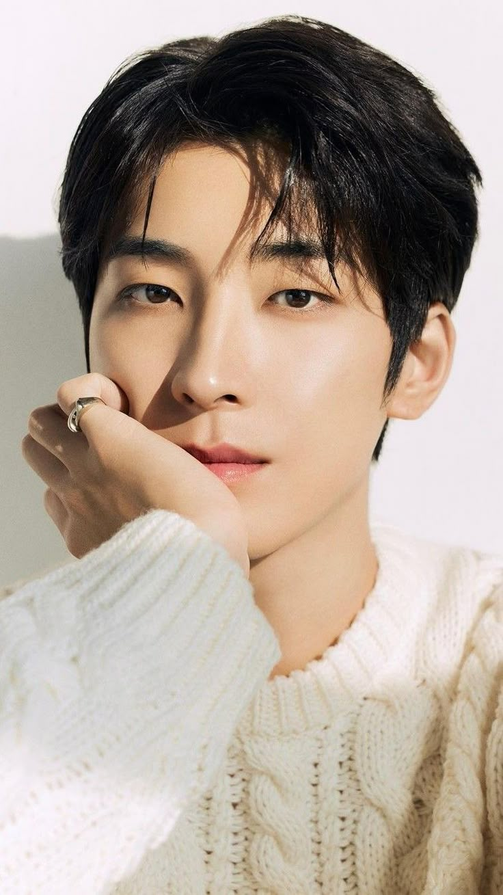 |
Position: Rapper, Sub-Vocalist Birthdate: July 17, 1996 He was born in Changwon, Gyeongsangnam-do, South Korea. – He has a brother, Jeon Bohyuk, who is two years younger than him. He is a former model and now has a clothing line. – On Weekly Idol, he introduced himself as the member with the lowest voice in SEVENTEEN. – He became a trainee in 2011. |
| 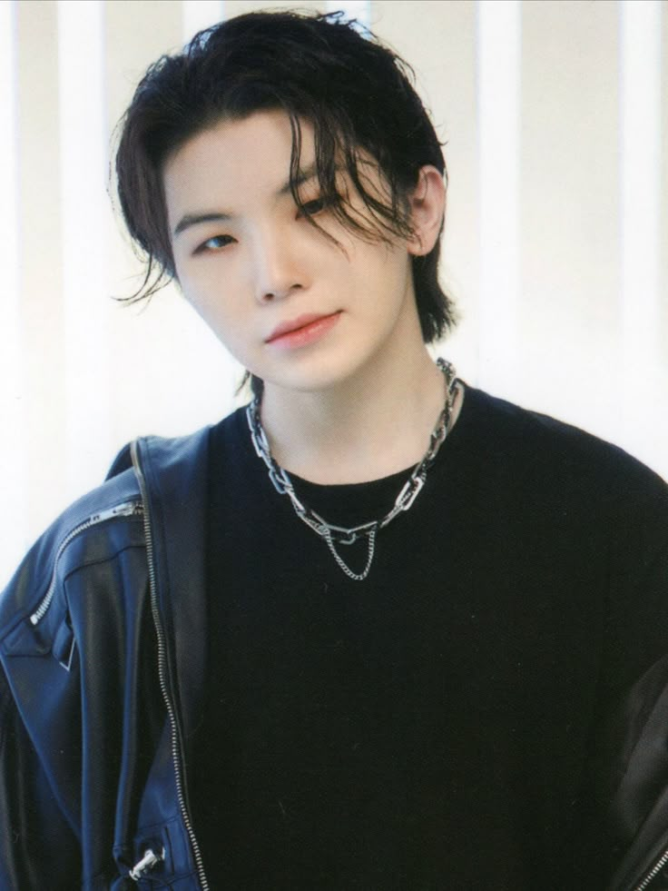 |
Position: Vocal Team Leader, Lead Vocalist, Producer Birthdate: November 22, 1996 – He was born in Busan, South Korea. – He is an only child. – When he was younger, he did classical music for a long time. He played the clarinet and other band instruments. – He became a trainee in 2011. |
| 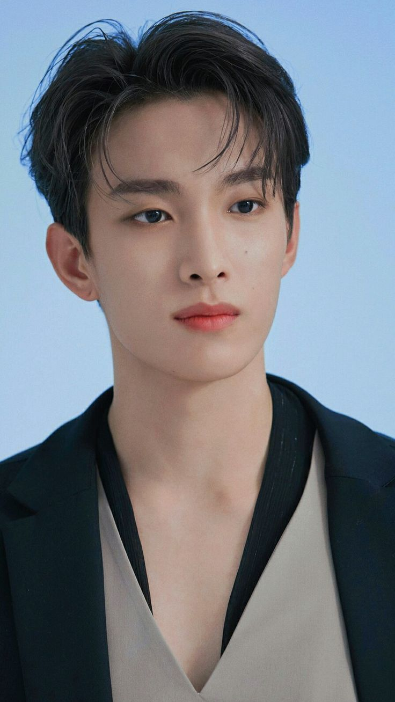 |
Position: Main Vocalist Birthdate: February 18, 1997 – He was born in Suji-gu, Yongin-si, Gyeonggi-do, South Korea. – He has an older sister. – Vernon, Seungkwan, and Joshua think he’s the funniest member. – He became a trainee in 2012. |
| 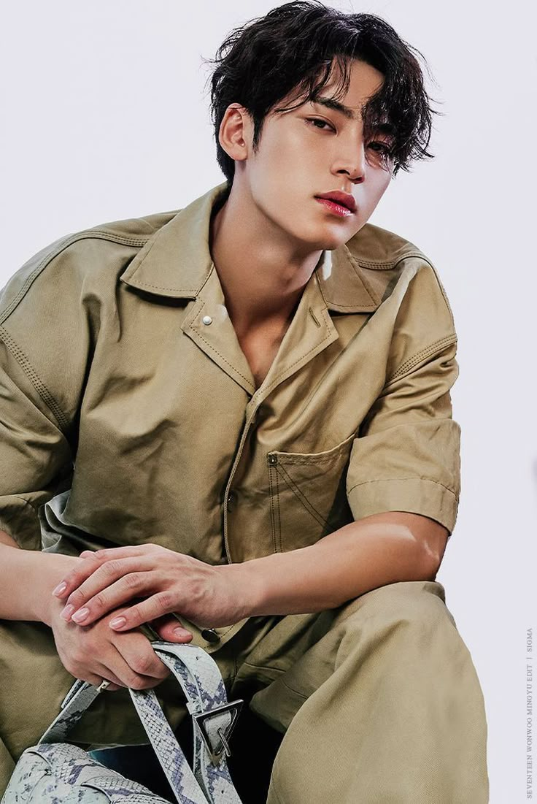 |
Position: Rapper, Sub-Vocalist, Visual, Face of the Group Birthdate: April 6, 1997 – He was born in Anyang-si, Gyeonggi-do, South Korea. – He has a sister who is four years younger than him. – He is the tallest member of the group. – He ranks himself as the best visuals in the Hip-Hop Team. |
| 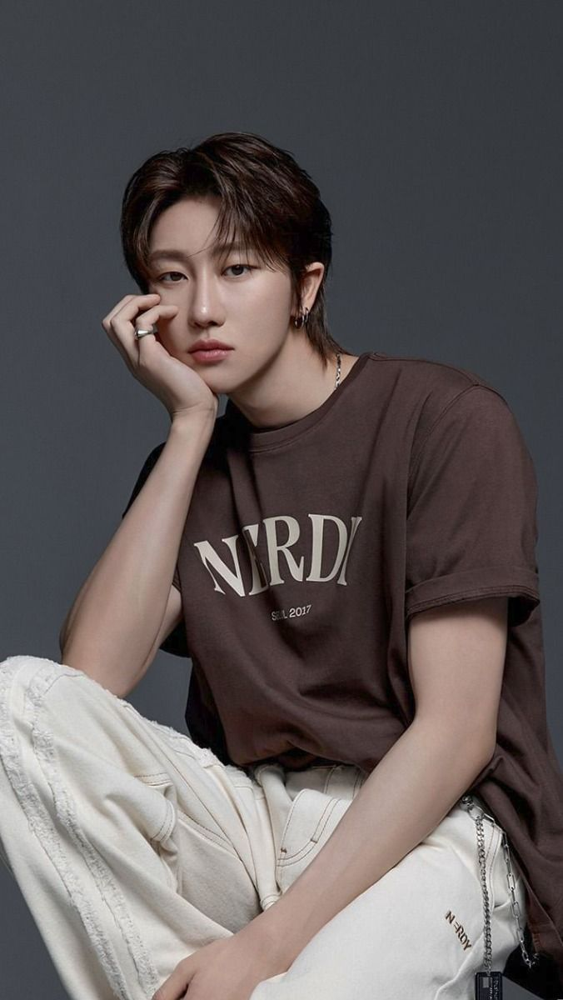 |
Position: Lead Dancer, Sub-Vocalist, Sub-Rapper Birthdate: November 7, 1997 – He was born in Haicheng, Liaoning, China. – He is an only child. – He is in charge of b-boying in the performance team. – He became a trainee in 2013. |
| 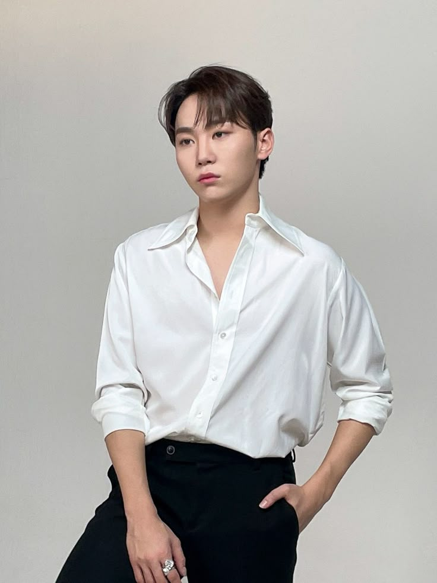 |
Position: Main Vocalist, Face of the Group Birthdate: January 16, 1998 He was born in Busan but was raised in Jeju. – He has 2 older sisters, Boo Jinseol and Booreum, who is also a singer. – He is SEVENTEEN’s “mood maker”. – He became a trainee in 2012. |
| 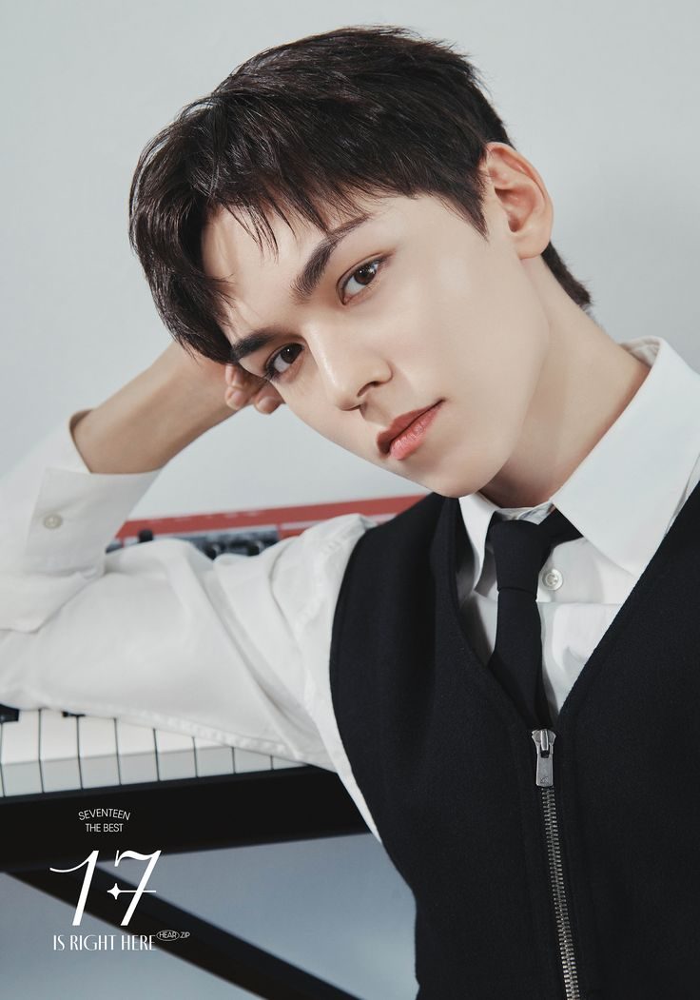 |
Position: Rapper, Sub-Vocalist, Visual, Face of the Group Birthdate: February 18, 1998 He was born in New York, United States. – His family lives in Hongdae, but he lives in Gangnam since SEVENTEEN’s dorm is located there. – He has a sister who is six years younger than him. – He became a trainee in 2012. |
| 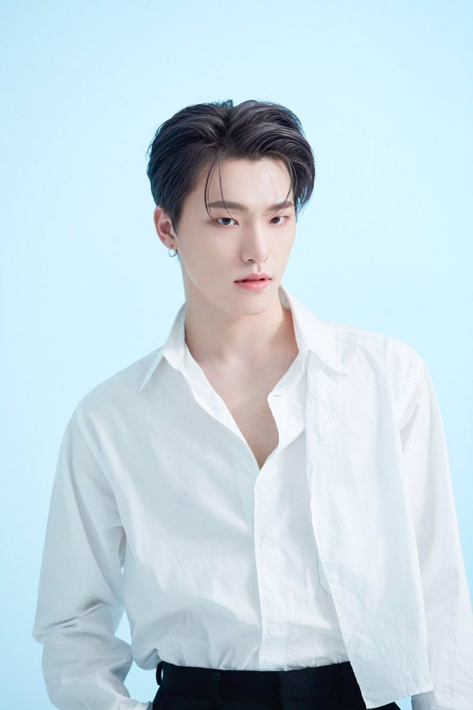 |
Position: Main Dancer, Sub-Vocalist, Sub-Rapper, Maknae Birthdate: February 11, 1999 – He was born in Iksan-si, Jeollakbu-do, South Korea. – He has a brother who is two years younger than him. – His parents are dancers. His father opened up a dance class and taught him how to dance. – He became a trainee in 2012. |